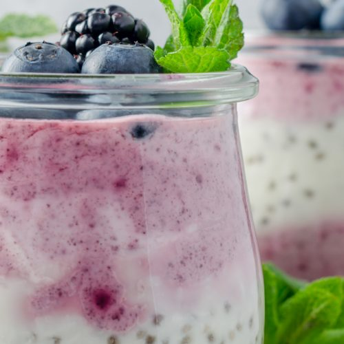

GLUTENFREE

Acai and berry chia puddings
Like other berries, acai berries contain antioxidants and fibre. Try it out in this chia base pudding.
Serves: 2
Time to make: 10 mins
Hands-on time: 10 mins
Nutrition Info (per serve)
Calories : 213cal
Kilojoules : 890kJ
Protein : 8.8g
Total fat : 7.9g
Saturated fat : 1.7g
Carbohydrates : 21.3g
Sugars : 18.8g
Dietary fibre : 10.6g
Sodium : 50mg
Calcium : 299mg
Iron : 2.3mg
Ingredients
¼ cup white chia seeds
7fl oz milk of choice (unsweetened almond, coconut or skim)
1 teaspoon vanilla bean extract
2 teaspoons pure maple syrup
2oz frozen unsweetened acai purée, slightly thawed
1 cup frozen mixed berries
2 tablespoons milk of choice
1 teaspoon pure maple syrup
1 tablespoon puffed millet, to serve
fresh mixed berries, to serve
Instructions
1. Combine the chia seeds, milk, vanilla and maple syrup in a bowl or airtight container and whisk to combine.
2. Cover and refrigerate overnight, or for at least 5–6 hours, until thickened.
3. Divide the chia pudding base between two serving jars or bowls.
4. Process the acai, frozen berries, milk and maple syrup until well combined, thick and creamy. Then spoon acai mixture over chia base and top with fresh berries and puffed millet. Serve immediately.